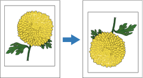

Girar imagem em 180 graus
Girar imagem em 180 graus, quando ativada, vira a imagem no papel, de modo que a borda superior se torna a borda inferior. A orientação pode ser retrato ou paisagem.

Para selecionar as opções de Girar Imagem em 180 graus:
Na janela Avançado, ao lado de Girar imagem 180 graus, clique nas setas e selecione uma opção.
- Padrão da impressora: usa as configurações atuais da impressora.
- Ligada ou Ativada: permite que a impressora gire automaticamente as imagens em 180 graus. A impressora considera os tamanhos de papel, orientação, direção da alimentação do papel e opções de acabamento selecionadas ao girar as imagens.
- Desligada ou Desativada: desliga a função.